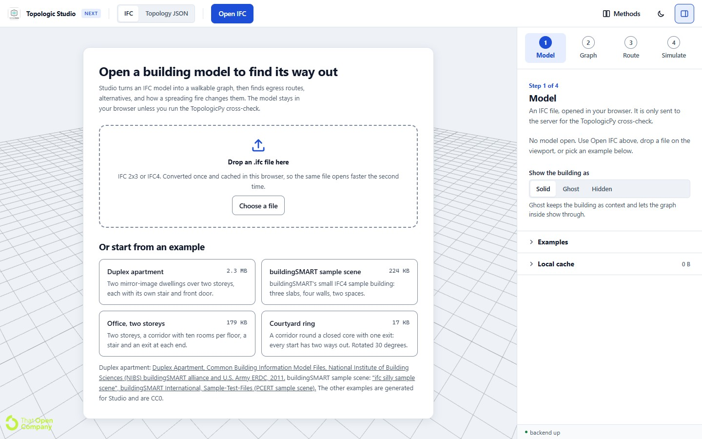
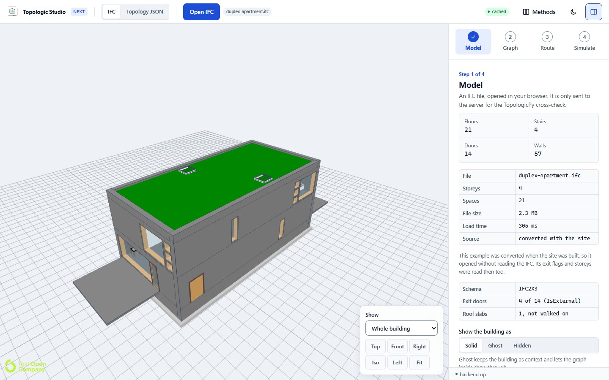
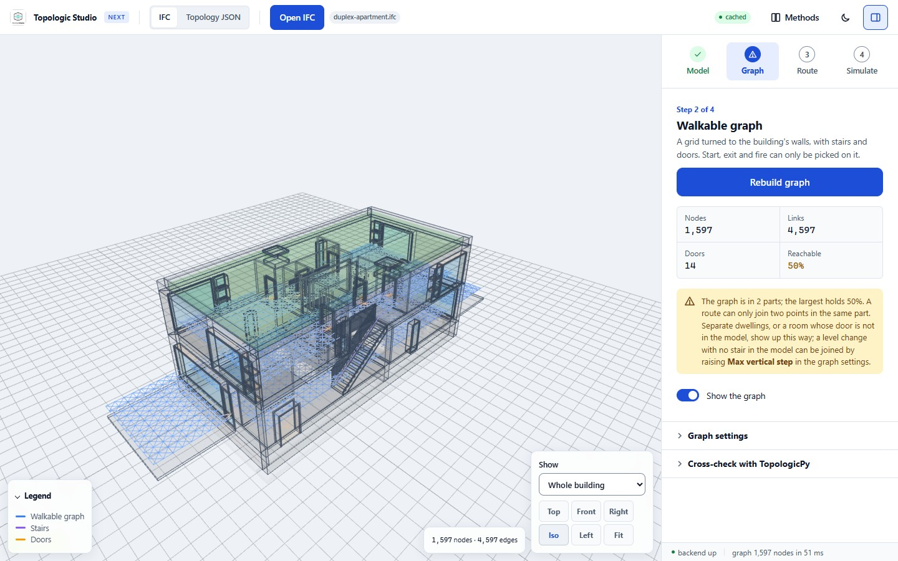
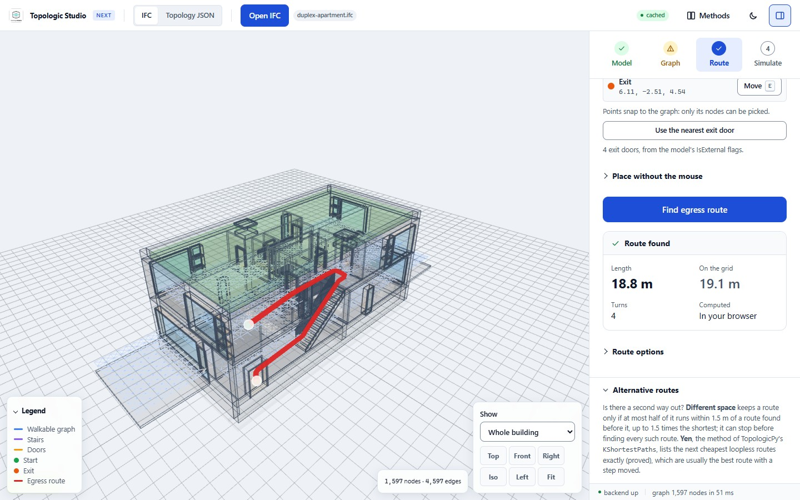
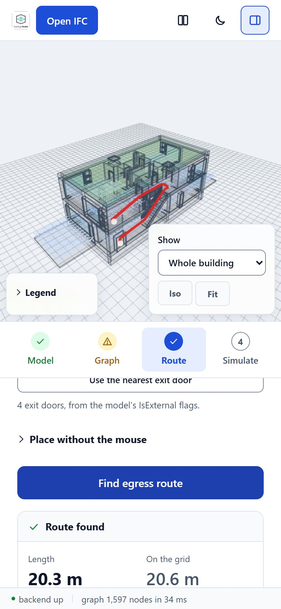

Getting started
This page takes a first model from opening to its shortest way out. The fire, the sprinklers and the checks have pages of their own.
Quick start
- Open the app and tap Duplex apartment on the welcome screen, or drop an
.ifcfile on the page. - In the Graph step, press Build egress graph.
- In the Route step, press Set beside Start (or S) and click a point on the graph, then press Use the nearest exit door and Find egress route.
- In the Simulate step, press Set beside Fire origin (or F), click where the fire starts, and press Start fire. The route moves away from the heat when it has to.
- To go further, switch on the Flamescapes combustion solver (optional) and then Sprinklers in the Simulate step (see Fire and smoke and Fire suppression), or run the checks in the Route step (see Code and performance checks).
Guided runs
The welcome screen also offers guided runs. Studio opens an example and takes each step itself, with a caption for each, then stops at the result. On the Duplex, The way out builds the graph and finds the route from the room furthest from an exit; A fire on the route adds a fire part-way along it; Smoke behind closed doors runs the Flamescapes solver with every door closed. Vienna on the GPU takes the TU Wien building end to end: its way out, a Flamescapes fire, everyone leaving with it, the forecast's escape and a tour. Every room's way out opens the NIBS Clinic and draws its egress map, then measures each floor finely and audits it for a wheelchair (Accessibility). Stop ends a run where it is.
To come back to the guided runs from anywhere, press Guided runs, the button with a back arrow at the top left of the view (on a phone the arrow alone), or in a guided run's own card. It stops whatever is running, as the stop buttons do (a fire, its solver, a graph build, a plan, a GIF recording, which is saved), closes the model and shows the welcome screen at its guided runs, without reloading the page. Settings are kept.

Step 1, Model: what is in the file

Studio reads IFC2x3 and IFC4 files. The Model step counts the floors, stairs, doors and walls, the storeys and rooms (IfcSpace), and reports which doors are exits and which slabs are roofs (roofs are not walked on).
Exits come from the file's own data: a door marked FireExit or IsExternal in Pset_DoorCommon, or a door with an external space boundary. If the file marks none, Studio falls back to doors with floor on one side only and says so. The Duplex marks 4 of its 14 doors as external.
The first time you open a file it is converted and stored in your browser, so the next time it opens from the cache without being read again (up to 24 models or 512 MB; clear them under Local cache in the Model step).
What the elements are
What the elements are names every element: by its IFC class where the exporter typed it, and otherwise (furniture and appliances often arrive as IfcBuildingElementProxy) by its name, then by the size of its box. With the class hidden, these rules named 86% of 6,066 typed elements from 45 models correctly.
Identify by shape then runs IFCNet's point-cloud classifier (Emunds et al. 2021) in your browser on the elements only the box could place, and keeps its answer when it is at least 90% sure. The first use downloads 4.5 MB. The comparison with IFCNet, text embeddings and small language models is in the identification benchmark.
Describe this model
Describe this model writes a short plain description of the building, its ways out and its fire. A language model writes it from the facts Studio has already worked out (storeys, rooms, doors and exits, the walkable graph, the route, the fire's results) and from nothing else. Once the graph is built, each storey gets a line of its own: its ways out and its longest walk to one, worked out on the graph, and the code check's verdicts if you ran it; the model words them instead of finding paths itself. The facts it is given, folded under the switch, lists those facts word for word before anything is written or sent.
Whatever else you have run joins the facts, and nothing you have not: people leaving (how they chose their exits, and the range over seeds), the slime mould and its readings, said to be a reading for design, the performance check, sprinklers, suppression systems and extinguishers, the spaces not walked on, and a much nearer exit than the route's. On a tall building with everything run, the facts list fewer room names and storey lines until they fit the 8,000 characters the Cloudflare describer reads.
Written by chooses where the description is written. It starts on This device where the browser's own model can run, or where the site has no Cloudflare describer, and on Cloudflare otherwise.
- This device: on Chrome 148 or later on a desktop computer, Chrome's built-in model writes it on the computer, and nothing is sent. Chrome downloads its model the first time (once, a few GB), and it needs more than 4 GB of GPU memory or 16 GB of RAM.
- Cloudflare: on other browsers, a site deployed with the Cloudflare describer can send those facts, never the IFC, to a Workers AI model on Cloudflare's free allowance instead.
Showing the building
Show the building as switches the model between Solid, Ghost (see-through, so the graph shows inside) and Hidden. The view buttons give top, front, side and isometric views, and Show cuts the building at a storey. A Second model (an MEP or structural IFC of the same building) can be added here; it is described under Fire suppression.
Rooms models (LOD1)
Rooms models (LOD1), folded at the foot of the Model step, opens a building given as rooms, storeys, doors and stairs instead of an IFC: a TopologicPy LOD1 export (the CellComplex JSON that Topology.ExportToJSON writes, one cell per room, opened together with its circulation and adjacency graphs) or a GeoJSON plan. Studio draws it as rooms: walls 0.2 m thick on the rooms' outlines, a slab under each floor, and stairs as treads along their walking lines. Shafts, voids and tanks are not walked in. The graph, routes, code check and fire models, Flamescapes too, run on it as on an IFC. The step then counts its rooms, storeys, doors and stairs, lists any warnings from reading it, and offers Export as a GeoJSON plan: rooms, doors, stairs and storeys in plan metres, the format Studio reads back and other tools can edit.
Step 2, Graph: where a person can walk

Build egress graph lays a grid of points over every floor, 0.5 m apart and turned to line up with the walls, and joins neighbouring points that a person could walk between. Walls cut 0.75 m above each floor block the links that cross them, doors join the rooms on either side, and each stair is walked along its flight. The whole graph is built in your browser, in a few hundredths of a second for the Duplex (1,597 points and 4,597 links).
The step reports how much of the building one can reach from its largest part. The Duplex is two homes side by side, so its graph is in two parts and the app says so: a route can only join two points in the same part.
Two kinds of room are not walked on, and the step says which: spaces outside the building that no door opens onto, such as roofs drawn as rooms, and spaces named as voids ("open to below", "void", "Luftraum"). A roof, terrace or balcony with a door onto it stays walkable. The NIBS Clinic draws five of its roofs as rooms that no stair or door reaches; without this its graph had parts on the roof that reached no exit.
Show the graph, on by default, draws the graph over the building; G does the same.
Graph settings change how the graph is built. Changes apply when the graph is rebuilt.
- Grid spacing
0.5 m by default, 0.2 to 2 m. A smaller spacing follows narrow passages better and makes a bigger graph.
- Max vertical step
0.35 m by default, 0.05 to 1.5 m: the most height one floor link may span. Raise it only for ramps or split levels.
- Agent height
0.75 m by default, 0 to 2 m. It lifts the graph's points off the floor so the graph draws above it. It does not move where walls are cut (0.75 m above the floor) or where the fire is read (1.8 m above the floor), and the export to TopologicPy takes the lift off again.
- Walls block routes
On by default. Links that cross a wall 0.75 m above the floor are left out of routing; links that only touch a wall stay in, and door links always stay open. Off, routes, the forecast and the heat diffusion and spread-along-links fires pass through walls.
- No diagonal links
Off by default. On, routes use only grid-aligned links. On an open floor the grid route can then be up to 41 % (the square root of 2) longer than with diagonals; Draw routes straight recovers much of that.
- Use lifts and escalators
Off by default, as in an evacuation: lifts are not used in a fire unless they are evacuation lifts. On, a lift joins every floor beside it, and a ride counts as walking its rise, with no wait for the car.
- Up axis
Y up (the default, typical for viewers), Z up (typical for IFC) or X up. Get it wrong and floors read as walls.
Cross-check with TopologicPy
Cross-check with TopologicPy builds TopologicPy's own navigation graph from the IFC on the server, an independent estimate of the same space, and reports how much of each graph the other covers: where the two disagree, one of them is wrong about the building. The IFC is uploaded for this, and the server needs topologicpy 0.9.86 or later with IfcOpenShell.
- Grid spacing (m)
0.5 m by default, 0.25 to 5 m: the spacing of TopologicPy's graph, and also the radius within which a node counts as covered. Match it to the graph's spacing for a fair comparison.
- Its nodes we cover
The share of TopologicPy's nodes with one of Studio's nodes within that radius. Flagged below 90 %.
- Our nodes it covers
The share of Studio's nodes with one of TopologicPy's within that radius, also given per kind of node. Flagged below 90 %.
- Its nodes
How many nodes TopologicPy's graph has.
- Its parts
How many separate parts TopologicPy's graph falls into. Flagged when there is more than one, since a route cannot cross between parts.
- Show TopologicPy's graph
On by default: draws TopologicPy's graph beside Studio's.
Under the figures come the same shares per storey, and, with a start and an exit set, the route's length on each graph. When the two graphs do not line up (their median gap is larger than the spacing), a note says the coverage figures are not meaningful.
Step 3, Route: the shortest way out

Press Set beside Start (or S) and click a point on the graph, then set the Exit the same way, or press Use the nearest exit door. Find egress route draws the shortest route and straightens it, so it reads as a person would walk it rather than as a zigzag across the grid. The Route result under the button gives its length as drawn, its length on the grid before straightening, its turns (changes of direction of more than 25 degrees, between points at least 0.75 m apart), and whether it was computed in your browser or on the server.
The nearest exit door is one of the doors out of the building, drawn as orange rings. Where the model says which doors are external, these are the external doors at street level and the fire exits that open onto no walkable floor. A flat's front door flagged as a fire exit leads only to the stair, and a balcony door leads nowhere, so neither counts: of the Vienna model's 35 exit doors, two lead out, the street door and a fire exit at the back of the first floor.
Without a mouse, Place without the mouse puts the exit at any door from a list, or any point at typed coordinates. Route options switch between the built-in A* search (in your browser) and TopologicPy's TGraph engine (on the server). There, Draw routes straight, on by default, straightens each route as TopologicPy's Wire.Straighten does, never longer than the grid route: a run whose ends both stand 0.25 m clear keeps about 0.24 m from walls on the 0.5 m grid (less on a coarser grid), and doors and stairs stay on the route. Off, routes are drawn along the grid's links. It applies to the next route. Alternative routes look for other ways out: Different space keeps routes that do not run along one already found, and Yen lists the next cheapest routes exactly.
When the start stands much nearer another exit out of the building than the one picked (the route would save at least half its walk and 10 m), a note under the route says so and offers Use the nearest exit door. The route stays the one asked for. On the NIBS Clinic, a start beside an exit had crossed the building to the exit picked before: 54.9 m against 5.7 m.
The Code check and the Performance check (with the fire) are also in this step; see Code and performance checks. So are People leaving and the Slime mould; see People leaving and the slime mould.
Using your own IFC files
Studio works best on architectural models with slabs or floors, walls, doors and stairs. Some things that help, and what Studio does when they are missing:
- Exits. Mark exit doors with
FireExitorIsExternalinPset_DoorCommon, or give them an external space boundary. Otherwise Studio guesses from doors with floor on one side only, and tells you it did. - Stairs. Stairs are walked along their flights, including flights and treads aggregated into an
IfcStair. A stair modelled without treads, or a room named as a stair, is walked along an assumed dog-leg line inside its footprint. - Lifts and escalators (
IfcTransportElement, or rooms and objects named as lifts) join floors only when Use lifts and escalators is on. - Rooms (
IfcSpace) are needed for the two-zone fire model and for placing sprinklers per room. Where a model has few or no floor slabs (the NIBS Office walks on its spaces), the Flamescapes grid takes the spaces' floors as slabs. - Up axis. Most files are read correctly as they are; if the graph lies on a wall instead of a floor, change Up axis in the graph settings.
- Separate parts. If the Graph step reports several parts, a route cannot cross between them: check for missing doors, or raise Max vertical step where a level change has no stair in the model.
Files in the older IFC2X_FINAL schema, structural or MEP-only models and models with no floors are refused or give an empty graph, with a message saying why. A structural or MEP model can still be added as a second model.
On a phone

On a narrow screen the viewer sits above the steps, and the panels scroll underneath. Tap Set and then tap the graph to place a point, or use Place without the mouse to pick an exit door from a list. The examples are the quickest start on a phone; your own files are converted on the phone itself, so a large model takes longer the first time and opens from the cache after that.
Measured on an emulated mid-range phone (4G, processor slowed four times, empty cache), opening the Duplex example until it can be used takes about 1 s, and opening the Duplex IFC file about 1.2 s.
Exporting results to TopologicPy
Export for TopologicPy (JSON), in the Graph step and under a finished fire in the Simulate step, downloads the walkable graph in the JSON layout TopologicPy's Graph.ExportToJSON writes, so Graph.ByJSONFile reads it back (checked with topologicpy 0.9.86).
- Vertices: every node in the IFC's own world coordinates (metres, Z up, at floor level). The viewer's axis turn, the model's coordination matrix and the agent's lift are undone.
- Node attributes: its kind (floor, stair, door, lift) and its place on the route. After a Flamescapes run they also hold the gas temperature, visibility, CO, soot, CO₂ and O₂ at head height for every frame, their extremes, the time the node became untenable, its tenability index and its asphyxiant and heat doses. After a graph fire model they hold whether the node was burning at the end.
- Edges: source and target, kind, length in metres, and whether the edge is on the route.
- Graph properties: the source file, the fire model and its settings (fire class, doors, windows, ventilation, grid and backend), the fire origin in IFC coordinates, the frame times and the heat release series.
from topologicpy.Graph import Graph
from topologicpy.Topology import Topology
from topologicpy.Dictionary import Dictionary
g = Graph.ByJSONFile(open("duplex-apartment-topologicpy.json"))
first = Graph.Vertices(g)[0]
print(Dictionary.PythonDictionary(Topology.Dictionary(first))["untenable_s"])Export the run as a table (CSV), under a finished Flamescapes fire, writes one row per node per frame: its place and kind, the time, every reading and measure, the two doses and the tenability index, gzipped for a spreadsheet or a machine-learning dataset.
Keyboard shortcuts
| Key | Action |
|---|---|
| S | Set the start |
| E | Set the exit |
| F | Set the fire origin |
| G | Show or hide the graph |
| M | Show or hide the building |
| B | Build or rebuild the graph |
| Enter | Find the route |
| Esc | Cancel picking; close the Methods page |
Running Studio on your own computer
The app alone needs Node.js 20.11 or later; everything that runs in the browser works without the server.
git clone https://github.com/libishm1/Topologic_Studio.git
cd Topologic_Studio/topologicpy-web-frontend
npm ci # also copies web-ifc's WASM and the fragments worker into public/
npm run dev # http://localhost:5173The optional server needs Python 3.12 and TopologicPy 0.9.86 with topologic-core (0.9.87 removes Graph). The README gives the steps and the tests.